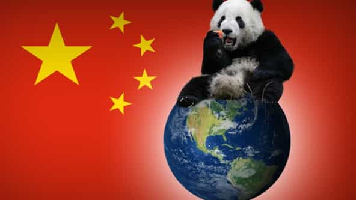
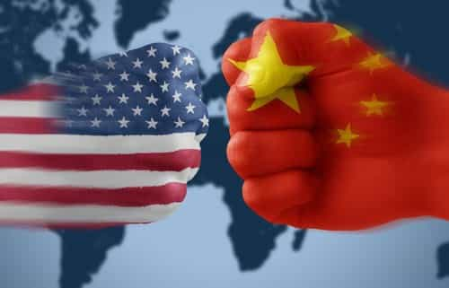
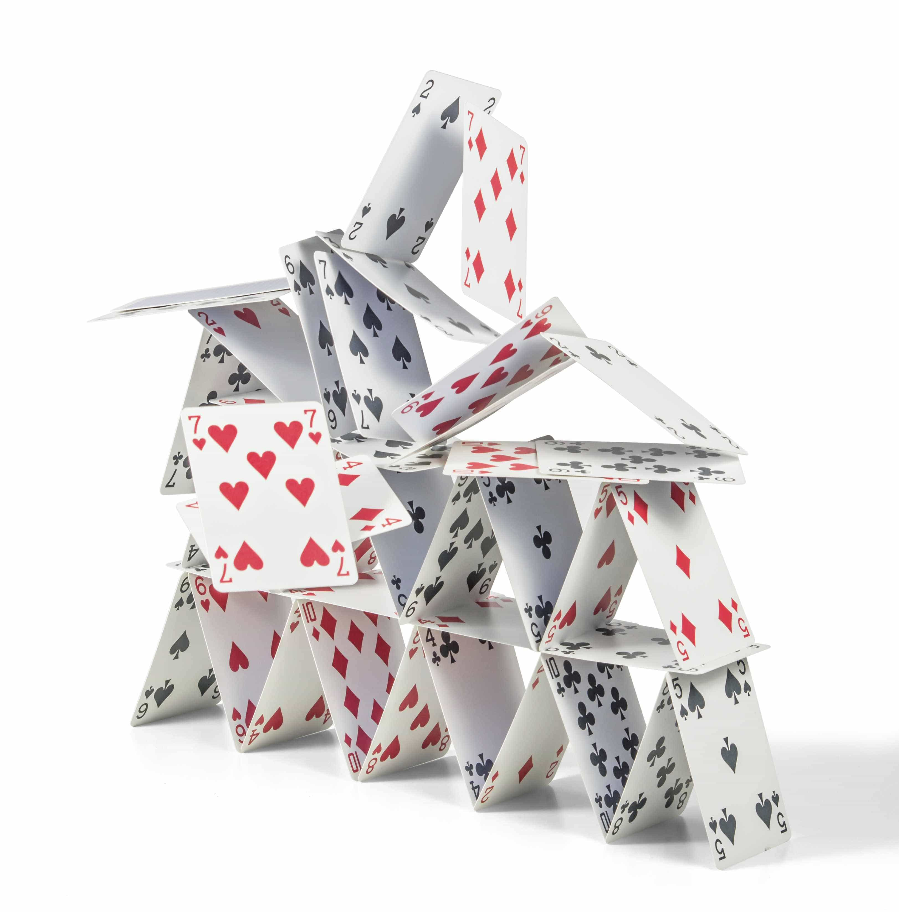
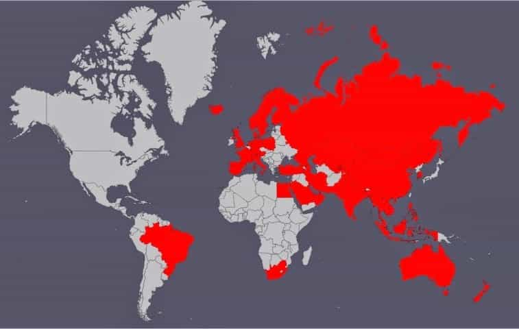
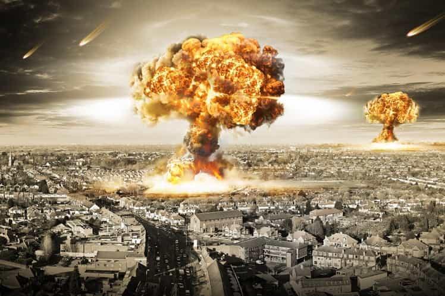

Ned is an intellectual bushranger. He has spent the past ten years in the leftist corridors of Australia’s universities and civil service and he’s had enough.


China is set to take over from the United States as the world’s largest economy. Military strength is built ultimately upon economic strength so if current trends continue, China will become the world’s second superpower, alongside the US, and perhaps eventually the world’s sole superpower.
They already have 1.4 billion people, nuclear weapons, and easily the world’s largest standing army with 2.3 million soldiers. This is probably not great news for those of us who like the rule of law, democracy, free speech, due process and, you know, not being slaves.
To understand the Chinese, we need to understand what they refer to as the “century of humiliation.” Between 1839 and 1949, the Western powers and Japan meddled in China with impunity, killing tens of millions of Chinese.
Understandably, this is a source of great anger and shame and the ruling Chinese Communist Party has built itself upon the pledge that such humiliation will never be repeated. Unfortunately for the West and Japan, it may soon be payback time. Let’s look at the five most likely scenarios for the rise of the world’s next superpower.

This is easily the best of a bad bunch of options. Thankfully, it is also the most likely. In this scenario, China continues to develop and in about a century from now it will be a fully-fledged first world nation with the largest middle class on earth. These billion or so middle-class Chinese are going to consume a lot of stuff which will hopefully keep the world economy ticking over. This much consumption on a finite planet will require some serious technological innovations so as not to destroy the earth. Get thinking, people.
In this scenario, China will gradually expand its influence in the Pacific and the US will gracefully withdraw. Japan, Philippines, Australia: you are now on your own.
Whether the Chinese Communist Party will survive is anyone’s guess. Economically they have already abandoned Communism in all but name. If the CCP does retain power then the increased wealth will enable it to shift from its current 1984 Room 101 totalitarianism to more of a control through pleasure and apathy Brave New World totalitarianism.
Think one billion overweight Chinese on the couch watching virtual-reality reality-TV. The latter option will be more fun for the Chinese people but will also make the CCP harder to overthrow.

This is the “tipping point” scenario and it has less to do with China and more to do with the US. If the US declines rapidly over the next few decades then China will be able to expand its influence into the Pacific more quickly than originally planned.
Can China’s economy survive without the current US export market? Probably. If they’re smart, and they are, then they have already planned their pivot away from the US market.

Some experts predict that China is an economic and social house of cards that will soon collapse. Economic depression, revolution, civil war: take your pick. A population of 1.4 billion is a lot of people so if things do go bad they will go really bad. People will be eating each other. This could be the worst humanitarian crisis in history.
It may seem like an ideal outcome for those of us in the West but, as all hunters know, beware the injured beast with nuclear weapons. And if China’s economy goes down the rest of the world will likely be in for a nasty depression.

Scenario 4 is a Chinese Empire. But haven’t we learned from the collapse of the European empires? Aren’t empires too costly to build and maintain? Well, yeah. We can call in the translators and explain that to the Chinese all we want, but ultimately the decision will be up to them. Maybe they can make it work.
Most likely they will not need to conquer and occupy countries militarily. They will simply use a combination of hard and soft power to establish client states and one-sided trade relationships. Maybe they will occupy Japan. China doesn’t like Japan.

Doomsday preppers, rejoice! It’s time to start hoarding food, making bullets, and digging bunkers. In this final scenario (literally), the US has not withdrawn gracefully (did anyone really think they would?) and the two nations are throwing nukes at one another. Or maybe it’s China vs India or China vs Russia. China doesn’t really get along with anyone.
It doesn’t matter who is firing nuclear missiles at whom, we’re all screwed. Duck and cover, get out your sleeping bag and prepare for nuclear winter.
Let’s all hope for scenario one and start learning some Chinese language and history. It really will come in useful.
At the end of the day China will only respect strength. If the West cannot remain as world police then we must at least maintain our defensive military capacity and make things difficult for China if they choose the path of aggression. It’s probably not a bad idea to stock up on canned food and bottled water too. Gānbēi!